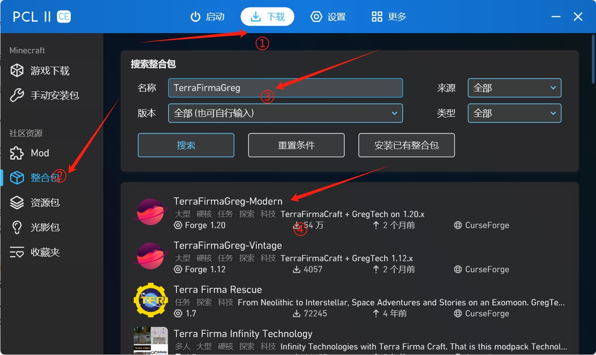
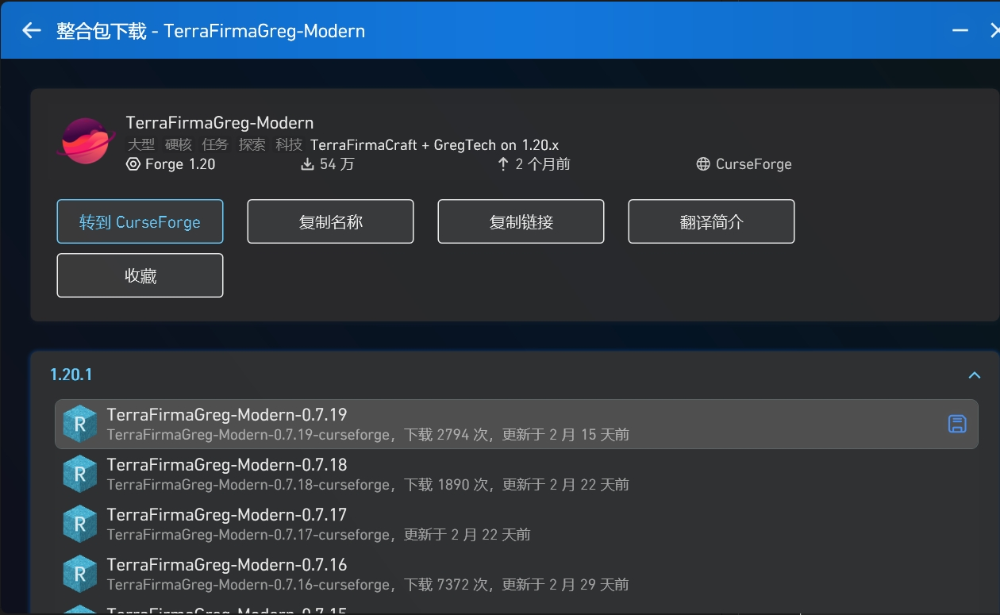
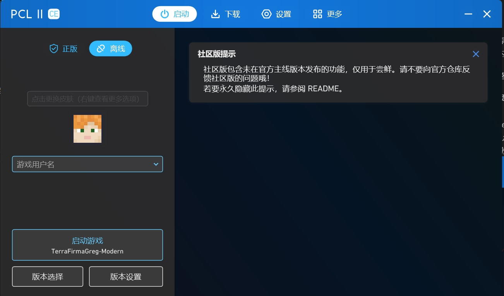

欢迎来到TFG整合包服务器(IP: 6mc.ltd)指南界面！
该文档目前还在维护当中，如果有任何意见请联系微信号: Mozilla_Firedog
一. 服务器官方kook/discord邀请连接：
Discord / Kook
二. 我该如何加入服务器呢？
注意： 本文所有有关内容都假定读者电脑已经安装Java环境，如果你还没有，请自行安装JDK-21。（PCL2启动器中有提供下载）
1.下载PCL2
PCL2(Plain Craft Launcher 2) 是一款由Minecraft社区自行研发出的启动器，集成了不只是启动，还有Mod、整合包下载等诸多功能，本文档将详细介绍如何如何下载该启动器。\ (1)首先，本文介绍最直接，也是最不容易让你的电脑安装一堆捆绑软件的方法，即前往PCL2官方发布页下载。进入网站 https://pcl-community.github.io/ （注意，部分用户可能无法正常访问，需要进行魔法上网），在屏幕右侧找到Releases，选择最新的版本，进入该版本发布界面，然后根据自己电脑的CPU架构在Assets中找到文件点击下载。如果你不知道你电脑是什么架构的，如果是Windows，那么x64居多。
(2)本文档不提供第三方下载地址，但是如果读者凭借自己力量实在无法正确下载PCL2启动器，那么欢迎读者加入服务器的kook或者Discord服务器进行讨论。
2.下载整合包
整合包指的是Minecraft社区将原版Minecraft进行修改并且整合、分发的Minecraft版本。服务器采用的是TerraFirmaGreg - Modern整合包，所以用户需要保证自己的Minecraft版本以及修改内容与服务器保持一致。
我们采用直接PCL2内直接下载整合包的方式来保证这一点。
①在上方点击 "下载" 进入下载页面。\ ②在左侧找到 "整合包"。\ ③在搜索栏内输入TerraFirmaGreg。\ ④点击TerraFirmaGreg-Mordern进入详情界面。\ ⑤点击下载0.7.19版本，必须确保版本与服务器一致，才能够正常进入。\  
3.在PCL2内启动游戏
正常下载完整合包中，在PCL2启动器中的"启动"界面中，应正常显示刚刚下载的整合包的名称如图。  此时读者有两种选择： 1.离线登录，直接输入你的id，进行游戏启动。 2.正版登录，对于拥有正版账号的玩家，可以进行正版验证登录，本文不再赘述。
三. 意见反馈
如果是MUC校内人员，请加入微信群进行讨论： \ 如果不是，请加入Kook或Discord服务器进行反馈。